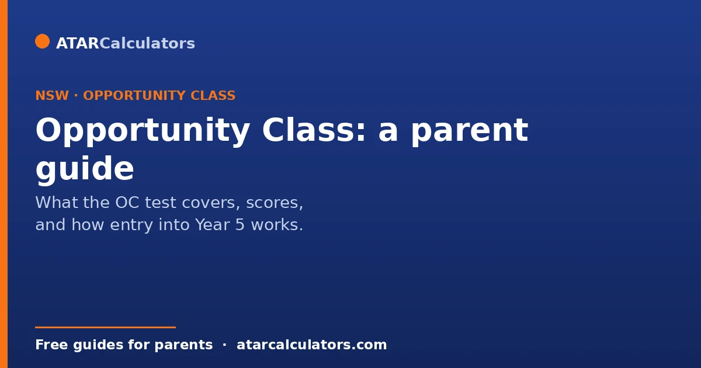
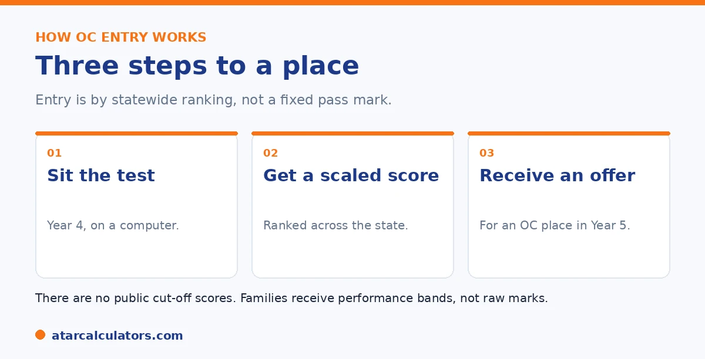

Here is the short version. Opportunity Classes are full-time classes for high-potential students in Years 5 and 6, hosted inside selected NSW public primary schools. The OC Placement Test is sat in Year 4 for entry in Year 5. It has three sections: Reading, Mathematical Reasoning, and Thinking Skills, with no writing. Entry is by a statewide ranking, and the Department does not publish cut-off scores. Families get performance bands rather than raw marks.
Most parents begin with one question: what score gets my child into an Opportunity Class? It is a fair question, and the honest answer surprises people. The NSW Department of Education does not publish cut-off scores.
That does not mean you cannot prepare well. Below is how entry works, what the test covers, and what a competitive result looks like. To estimate an OC score, use our OC score calculator.
Key takeaways
- Opportunity Classes are for high-potential students in Years 5 and 6.
- The OC test is sat in Year 4, for entry in Year 5.
- It has three sections: Reading, Mathematical Reasoning, Thinking Skills.
- There is no writing section, unlike the selective test.
- There are no published cut-off scores. Families get performance bands.
- Around 1,840 places are offered each year across about 88 classes.
What an Opportunity Class is
An Opportunity Class, or OC, is a full-time class for high-potential and gifted students in Years 5 and 6. Unlike a selective high school, an OC sits inside an existing public primary school as a dedicated class, not a separate campus.
If your child is placed, they join the OC for two years of specialist teaching alongside academically similar peers. There are around 88 opportunity classes across NSW, most in metropolitan Sydney, with some in regional areas and an online option through Aurora College.
How OC entry works
Entry is not a pass or fail. Your child sits the OC Placement Test in Year 4. Their marks are turned into scaled scores, combined into a placement score, and used to rank every candidate across the state. Offers then go to the highest ranked students for the classes they nominated.

You can list up to four preferences. Because most OCs are in metro Sydney, it is worth weighing the daily commute when you choose.
What the OC test covers
The OC test is fully computer-based, sat at a test centre, and made up of three sections. Here is the structure.
| Section | Time | Format |
|---|---|---|
| Reading | 40 minutes | Multiple choice, mixed text types |
| Mathematical Reasoning | 40 minutes | Multiple choice, no calculator |
| Thinking Skills | 30 minutes | Multiple choice, logic and reasoning |
About 110 minutes of testing in total. There is no writing section.
The sections reward reasoning and applying knowledge, not memorising facts. The big difference from the selective test is that there is no writing section. For a deeper look, see our OC score breakdown.
The truth about cut-off scores
The Department does not publish cut-off scores, raw marks, or a score total. So any exact OC cut-off you find online is a third-party estimate, and these change every year.
Cut-offs shift because entry is a ranking against the children who sat the test that year. Competition is far higher in metro Sydney than in some regional areas. The sensible aim is strong results across all three sections, not a magic number. See our OC cut-offs guide for how to gauge demand.
Want a rough idea of where a practice result sits?
Try the OC score calculator →How to read your result
Families do not get a mark or a rank. The report shows a performance band for each section, describing roughly where your child sat compared with others. The bands point to strengths and weaker areas, even without a number.
That makes a near miss easier to understand. It usually points to one fixable area, such as pacing in Reading or the matrix questions in Thinking Skills, rather than a broad gap.
How competitive OC entry is
OC entry is competitive. Around 1,840 places are offered each year, against roughly 12,000 to 14,000 applicants, so only a minority get an offer. The most sought-after classes, mostly in Sydney, need a top result.
It is worth keeping perspective. A child who misses out has still built strong reasoning skills. And many go on to sit the selective high school test in Year 6.
Understanding the scale of the competition helps you approach OC entry with realistic expectations and a healthy mindset. With roughly 1,840 places offered against something like 12,000 to 14,000 applicants, only a minority of children who sit the test get an offer. And the most sought-after classes, largely in Sydney, fill from the very top of the ranking. That means strong performance is genuinely needed. And it also means that not getting an offer is the common outcome, not a sign that a capable child has failed. Holding both of those truths at once is important. On the one hand, if OC is a serious goal, preparation should build steady, balanced skills across reading, mathematical reasoning and thinking skills. This is because the sections combine and an even profile competes best. On the other hand, the numbers make clear that missing out says little about a child's ability or future. This is because the shortage of places, not any deficiency in the child, is what turns most applicants away. There is also a natural second opportunity: OC is Year 5 entry, and children who are not placed can sit the selective high school test in Year 6. So an OC result is never the last word. The balanced approach, then, has three parts. Prepare properly if you are pursuing OC. Keep the process low-pressure, given how many strong children inevitably miss out. And treat the reasoning skills your child builds as valuable in their own right, whatever the outcome, and useful again for the selective test two years later.
Preparing for the OC test
The Department says coaching is not necessary, and there is no solid evidence it secures a place. What helps a Year 4 child is steady, low-pressure practice over months, with real attention to Thinking Skills, which is the least familiar section.
Short, frequent sessions suit a nine-year-old far better than long ones. For a full plan, see our OC preparation guide.
When the OC test happens
The Opportunity Class test is sat by Year 4 students for entry into Year 5. It runs in a set testing period, on computer, and families apply the year before. OC classes run for Years 5 and 6.
So this is a Year 4 decision. As with selective entry, applying on time matters, since late applications are generally not accepted.
No writing task in the OC test
Unlike the selective high school test, the OC test has no writing section. It has three parts: Reading, Mathematical Reasoning, and Thinking Skills. All are multiple choice, sat on computer.
So preparation looks a little different from selective. There is no essay to plan, and the focus is on comprehension, mathematical problem-solving, and reasoning.
Keeping OC in perspective
An Opportunity Class is one enrichment pathway, not a make-or-break moment. Most children who apply do not get a place, simply because places are limited. That does not limit their later options.
So treat it as a nice opportunity to try for, held lightly. A supportive local school, with extension at home, serves high-potential children very well too.
Listing OC preferences
As with selective high schools, you list OC schools in order of preference. The placement process weighs your child's score against demand at each school, moving down your list.
So the order you choose matters. A realistic, strong choice placed high can secure an offer, while listing only the most sought-after class risks missing out altogether.
Keep it calm and positive
For a child this young, a calm, positive approach protects their wellbeing and, in the end, their performance. Pressure and long study sessions tend to backfire at eight or nine years old.
So keep the whole process light. Frame it as a chance to try something, not a test they must pass, and make sure ordinary play and rest are never squeezed out.
Supporting your child either way
Whatever the outcome, your support at home is what matters most. An Opportunity Class can be a great fit for some children, but it is not the only way to nurture a high-potential learner.
So encourage your child, keep the process positive, and have a good plan regardless of the result. A supportive home, wide reading and a strong local school give a bright child everything they need to keep growing.
Common questions
What score do you need for an Opportunity Class?
There is no published score to aim for. The Department does not release cut-offs and ranks children against the cohort each year. Aim for strong results across all three sections rather than a fixed number.
How is the OC placement score calculated?
Each of the three sections is scaled, then combined into a placement score that ranks every candidate statewide. The three sections are widely reported to count equally, though the Department does not publish exact weightings.
What are the OC cut-offs?
The Department does not publish cut-offs for any class. Figures online are third-party estimates that change each year. Competition is higher in metro Sydney than in some regional areas.
When is the OC test?
Children sit it in Year 4, usually in early May, for entry into an Opportunity Class in Year 5. Applications open the year before. Confirm the current dates on the Department's website.
What does the OC test cover?
Three sections: Reading, Mathematical Reasoning, and Thinking Skills. There is no writing section, which is the main difference from the selective high school test. It is fully computer-based.
How many OC places are there?
Around 1,840 places are offered each year across about 88 opportunity classes, most in metropolitan Sydney. Roughly 12,000 to 14,000 children apply, so only a minority get an offer.
Is OC needed for selective high school?
No. OC and selective entry are separate processes. Doing an OC is not needed to apply for a selective high school later, and missing OC does not rule it out.
Estimate an OC placement score
Enter practice section results for a rough competitiveness guide. Free, and no signup.
Open the OC score calculator →Related guides
This guide is general information for parents, not formal advice. The NSW Department of Education sets the rules, and details can change. It does not publish section weightings, a score total, or class cut-off scores. So always confirm current details on the official NSW opportunity classes pages. Reviewed by the ATARCalculators Editorial Team.